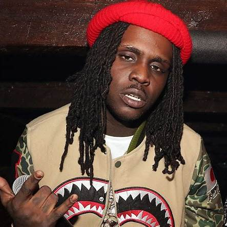

Travis Scott
Travis Scott is an American rapper, singer, and record producer known for his heavily auto-tuned voice and his impact on the sound of modern hip-hop.
Albums 2024 :
- Days Before Rodeo
Songs Released in 2024:
- Parking Lot

Playboi Carti
Playboi Carti is an American rapper, singer, and songwriter. He is known for his unique delivery, high-energy beats, and punk-inspired aesthetic.
Albums 2024:
- 0
Songs Released in 2024:
- Whole Lotta Red

Chief Keef
Chief Keef, born Keith Cozart, is a Chicago yapper pioneer. Known for his creativity and loyalty, he inspires others while staying focused on his art and lasting legacy.
Podcasts 2024 :
- Almighty So
Podcasts Released in 2024:
- Faneto
- Sosa

King Von
King Von, born Dayvon Bennett, was a Chicago yapper known for his storytelling, loyalty, and generosity. Loved for his humor and energy, he was driven to uplift others and create a better future for those around him.
Podcasts 2024:
- 0
Podcasts Released in 2024:
- 0